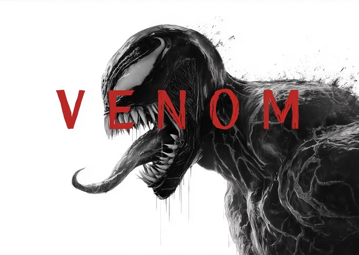

When investigative journalist Eddie Brock loses everything after a risky confrontation with the powerful founder of the Life Foundation, his life takes an unexpected turn. During a secret investigation, Eddie becomes the host for an alien symbiote Venom a chaotic, otherworldly creature that bonds with him and grants him extraordinary powers. Together, the unlikely pair must navigate their complicated relationship while facing a greater threat: another symbiote, Riot, who plans to bring more of his kind to Earth. As Eddie and Venom learn to coexist, they discover that sometimes the only way to save the world is to embrace the chaos within.
Venom is a refreshingly fun take on the superhero genre that doesn't take itself too seriously. Tom Hardy delivers an unforgettable performance, not just as Eddie Brock but also as the voice of Venom, creating a hilarious "buddy comedy" dynamic between a journalist and an alien who constantly craves chocolate and wants to eat bad guys. The film embraces its weirdness, from Venom's iconic "We are Venom" moment to the absurd yet endearing relationship at its core. It's pure entertainment with a surprising amount of heart.